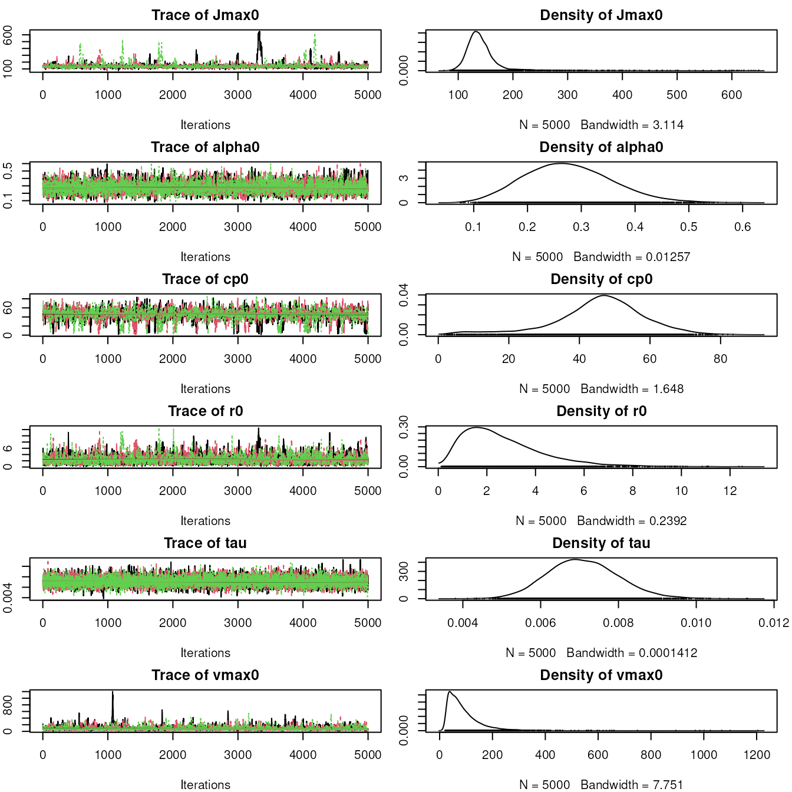
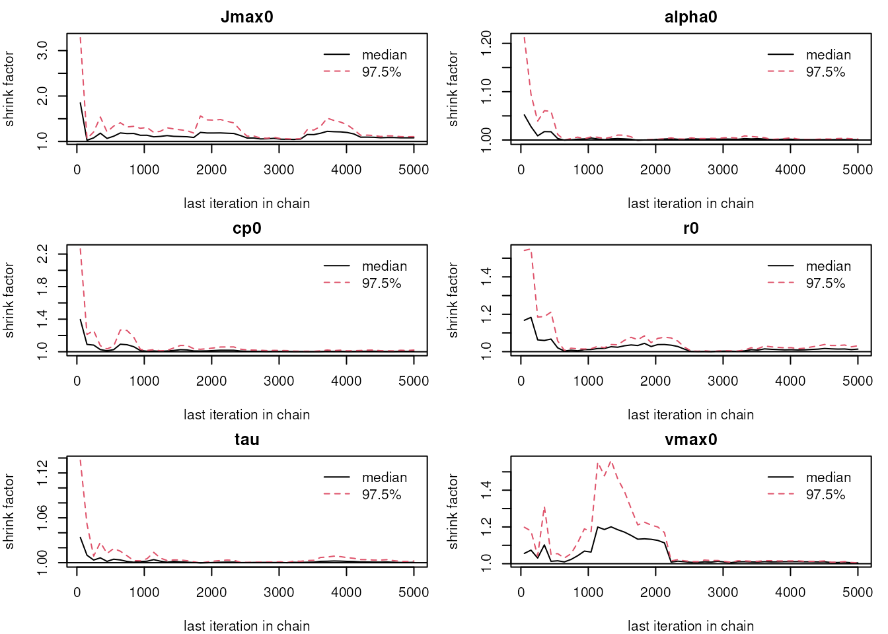
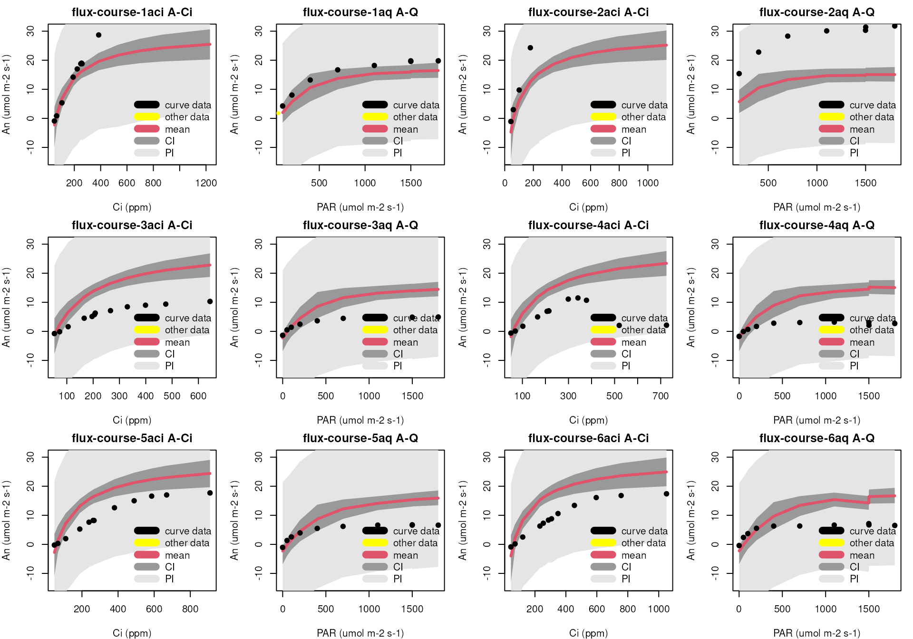
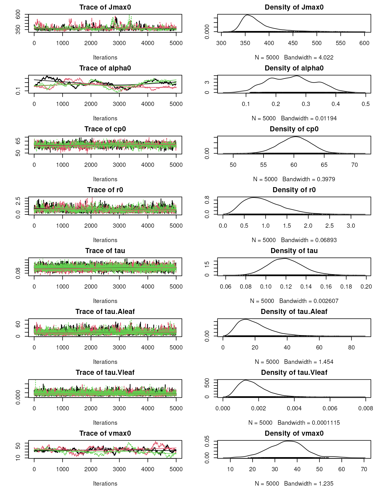
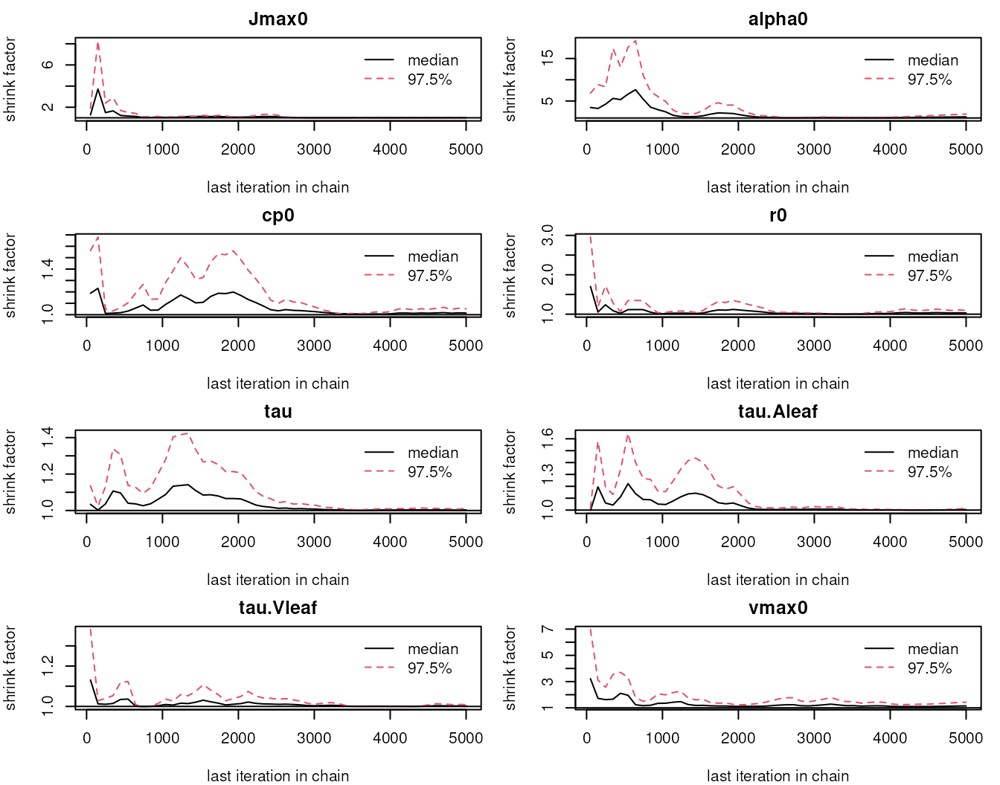
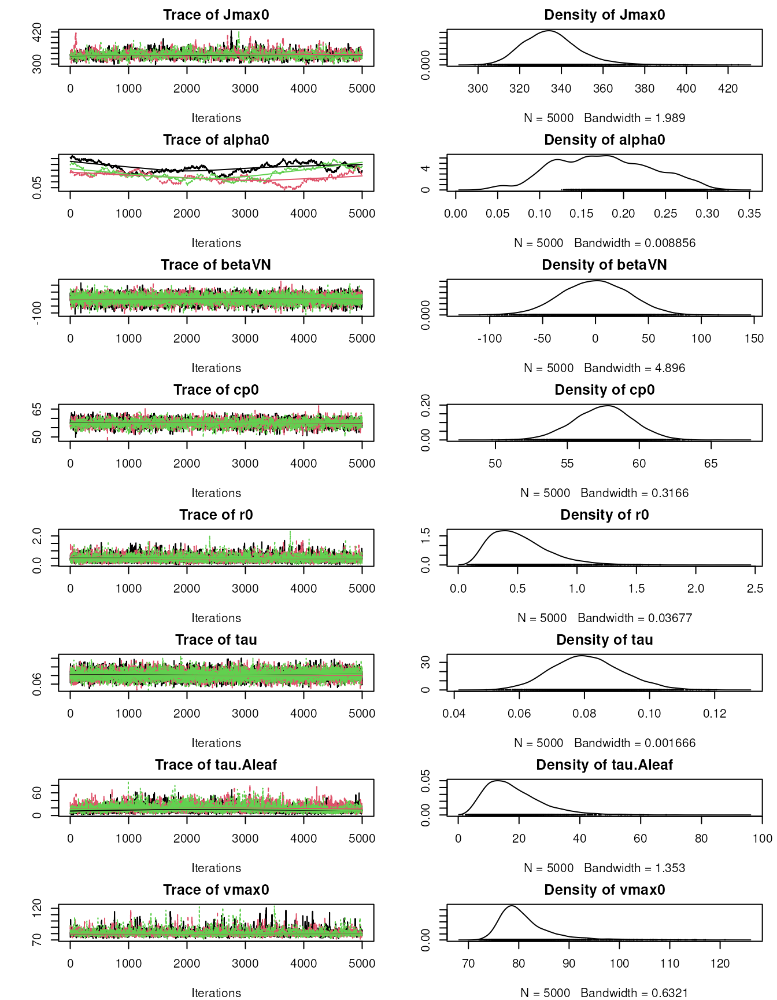
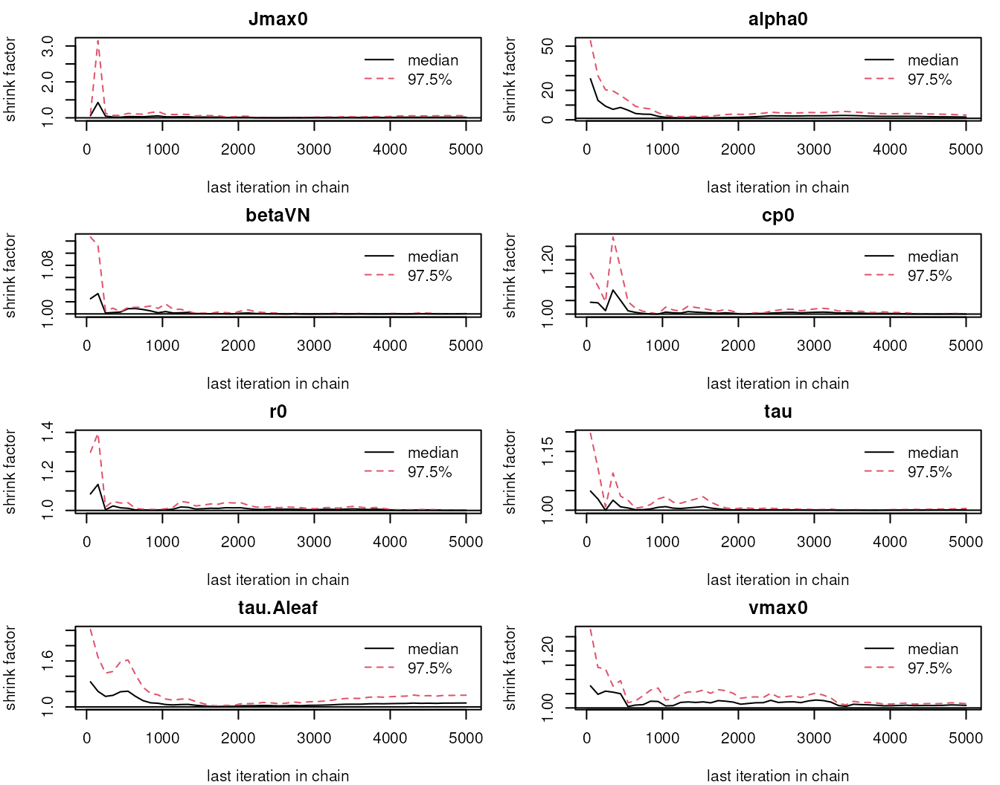
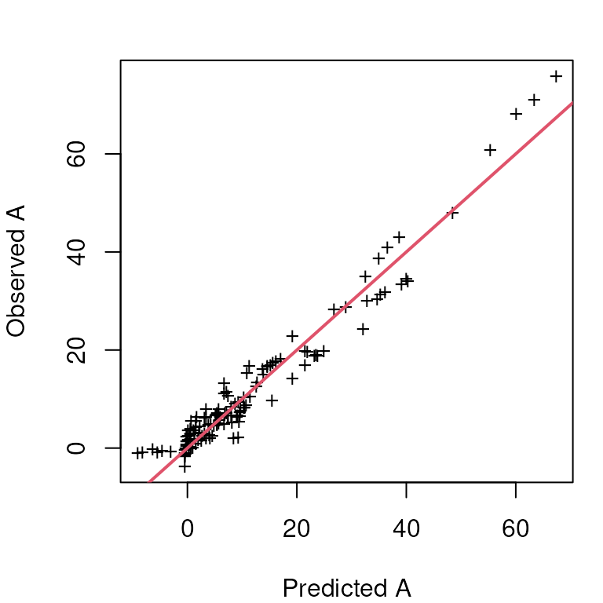
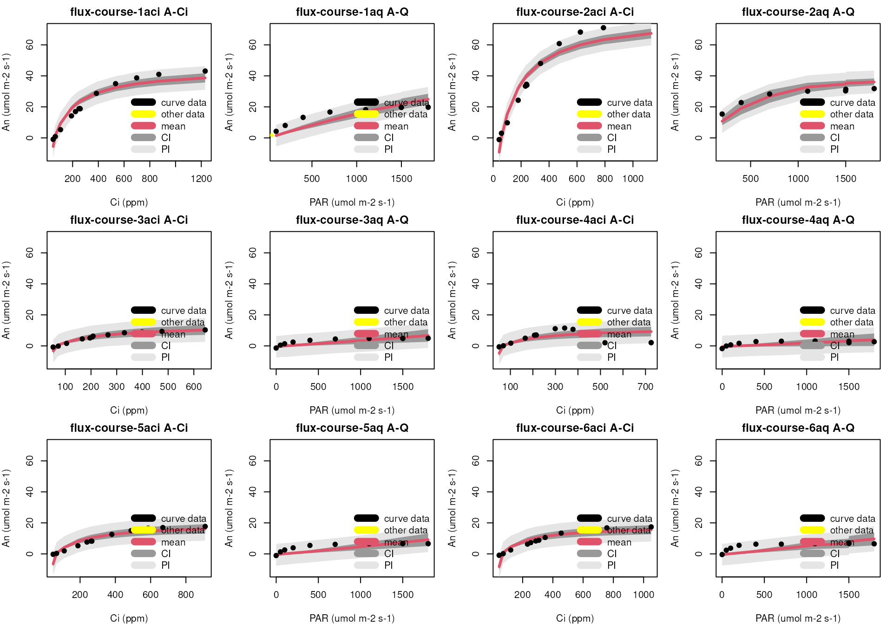

Fitting Hierarchical Bayes photosynthetic response curves
Mike Dietze
June 25, 2015
Source:vignettes/ResponseCurves.Rmd
ResponseCurves.RmdIntroduction
This package is designed to fit the Farquhar, von Caemmerer, and Berry (1980) photosynthesis model [FvCB model] to leaf-level photosynthetic data. The statistical model generalizes the Hierarchial Bayesian approach described in Feng and Dietze (2013). The important advance that this approach provides is the ability to include covariates (e.g. leaf traits) in a mixed effects model describing key model parameters, and . At the moment the only supported random effect is a leaf-level effect, however fixed effects can be specified using standard R linear model notation, including interaction terms.
This package includes functions for: loading photosynthetic data in the common LI-COR text-based format, performing visual QA/QC on that data, fitting the model to data, and generating diagnostic response-curve plots with confidence and predictive intervals. The diagnostic and QA/QC functions assume that data was collected as CO2 and light response curves (A-Ci and A-Q respectively). This assumption is not required for model fitting, so alternative sampling designs are allowed, as described by Dietze (2014).
The version of the FvCB model used is described below, and at the moment does not include the TPU limitation term or temperature corrections (i.e. all data are assumed to be collected at the same leaf temperature, all parameters are specific to that temperature). It also assumes that electron transport rate, J, is a saturating function of .
| Parameter | Symbol | Definition |
|---|---|---|
| alpha0 | quantum yield (mol electrons/mole photon) | |
| Jmax | maximum electron transport | |
| cp | CO2 compensation point | |
| vmax0 | maximum Rubisco capacity (a.k.a Vcmax) | |
| r | leaf respiration | |
| tau | residual precision | |
| q | PAR | |
| pi | CO2 concentration |
The ‘Parameter’ above refers to how the variable is referenced in the code, and thus the name that will be returned by the statistical fit.
The hierarchical version of this model is equivalent to the standard model except that and are mixed effect linear models of any covariates specified. These linear models assume uninformative Normal priors, while the random effects and residual errors are assumed to have Gamma priors on their precisions. All other priors are as described below in the example code. The FvCB model is fit using JAGS via the rjags package so outputs are coda mcmc.list objects that can be assessed and manipulated using standard tools in the coda package.
Install package from Github
If you have all of PEcAn installed, skip this – PEcAn.photosynthesis is already installed!
To install only the PEcAn.photosynthesis package, separately from the rest of PEcAn, run the following in R:
remotes::install_github("PecanProject/pecan/modules/photosynthesis")You should only have to do this once.
Load library and example data
In this example we are using a set of files that are built into the package, but you could easily replace filenames with vector of your own filenames, for example using list.files to look up all the files in a directory
## Loading required package: rjags## Loading required package: coda## Linked to JAGS 4.3.2## Loaded modules: basemod,bugs
## Get list of LI-COR 6400 file names (ASCII not xls)
filenames <- system.file("extdata", paste0("flux-course-",rep(1:6,each=2),c("aci","aq")), package = "PEcAn.photosynthesis")
## Load files to a list
master = lapply(filenames, read_Licor)## [1] "flux-course-1aci"
## [1] "flux-course-1aq"
## [1] "flux-course-2aci"
## [1] "flux-course-2aq"
## [1] "flux-course-3aci"
## [1] "flux-course-3aq"
## [1] "flux-course-4aci"
## [1] "flux-course-4aq"
## [1] "flux-course-5aci"
## [1] "flux-course-5aq"
## [1] "flux-course-6aci"
## [1] "flux-course-6aq"run QA/QC checks
The code below performs a set of interactive QA/QC checks on the LI-COR data that’s been loaded. Because it’s interactive it isn’t run when this vignette is knit.
If you want to get a feel for how the code works you’ll want to run it first on just one file, rather than looping over all the files
master[[1]] <- Licor_QC(master[[1]])On the first screen you will be shown an A-Ci curve. Click on points that are outliers that you want to remove. Be aware that these points will not change color in THIS SCREEN, but will be updated in the next. Also be aware that if your data set is not an A-Ci curve (or contains both A-Ci and A-Q curves) there are points that may look like outliers just because they are data from the other curve. When you are done selecting outliers, click [esc] to move to the next screen.
The second screen then verifies the status of point selections from the first screen and gives you an opportunity to unselect points that had been flagged as ‘fail’.
The third and fourth screens are the equivalent plots for the A-Q (light response) curves.
Finally, this function returns a copy of the original data with a new column, “QC”, added. This column will flag all passed values with 1, all unchecked values with 0, and all failed values with -1.
The function Licor_QC has an optional arguement, curve, which can be set to either “ACi” or “AQ” if you only want to perform one of these diagnostics rather than both (which is the default).
Also, the QC code attempts to automatically separate which points are part of the ACi curve from which parts are part of the AQ curve, based on how close points are to the the variable which is supposed to be held constant. The optional variable “tol” controls the tolerance of this filter, and is expressed as a proportion of the fixed value. The default value, 0.05, corresponds to a 5% deviation. For example, in the ACi curve the light level should be held constant so the code filters the PARi variable to find the mode and then included any data that’s within 5% of the mode in the ACi curve.
Once you have a feel for the QA/QC function, you’ll want to run it for all the data you’ve loaded.
for(i in 1:length(master)){
master[[i]] = Licor_QC(master[[i]])
}Fit FvCB model to composite data
If you only want to fit the model to the data from one leaf you could do this as
fit1 <- fitA(master[[1]])Where the one required argument is the data frame of photosynthetic data. However, this code also allows use to fit the FvCB model to all of the data at once.
if(file.exists("fit.RData")){
load("fit.RData")
} else{
fit <- fitA(dat)
save(fit, file = "fit.RData")
}## Compiling model graph
## Resolving undeclared variables
## Allocating nodes
## Graph information:
## Observed stochastic nodes: 133
## Unobserved stochastic nodes: 139
## Total graph size: 2117
##
## Initializing modelBecause the MCMC can take a bit of time to run, in this example the code is written to load the existing fit if it exists, which just makes knitting the vignette more efficient.
The returned object is a list with two mcmc.lists, “params” and “predict”, and the text of the JAGS model that was fit. We can look at this model below:
writeLines(fit$model)##
## model{
##
## ## Priors
## Jmax0 ~ dlnorm(4.7,2.7) ## maximum electron transport rate prior
## alpha0~dnorm(0.25,100) ##quantum yield (mol electrons/mole photon) prior
## vmax0 ~dlnorm(4.6,2.7) ## maximum rubisco capacity prior
##
## #Jmax ~ dweibull(2.0,260) ## maximum electron transport rate prior Serbin 2012
## #alpha0 ~ dgamma(2.0,22.0) ## quantum yield prior Serbin 2012
## #vmax0 ~ dweibull(1.7,80) ## maximum rate of carboxylation prior Serbin 2012
##
## r0 ~ dlnorm(0.75,1.56) ## leaf respiration prior
## #r ~ dweibull(2.0,6.0) ## broad leaf respiration prior for trees
## cp0 ~ dlnorm(1.9,2.7) ## CO2 compensation point prior
## tau ~ dgamma(0.1,0.1)
## #TPU tpu~ dlnorm(3,2.8) ##tpu
##
## ## Constants: Bernacchi et al 2001, PC&E, Table 1
## R <- 8.3144621 ## gas constant
## r.c <- 18.72
## r.H <- 46.39
## Vc.c <- 26.35
## Vc.H <- 65.33
## Vo.c <- 22.98
## Vo.H <- 60.11
## cp.c <- 19.02
## cp.H <- 37.83
## cp.ref <- 42.75
## Kc.c <- 38.05
## Kc.H <- 79.43
## Kc.ref <- 404.9
## Ko.c <- 20.30
## Ko.H <- 36.38
## Ko.ref <- 278.4
##
## ## Constants: June et al 2004, Funct Plant Bio
## Omega <- 18
## To <- 35 ## Representative value, would benifit from spp calibration!
##
## ## Vcmax BETAS
##
## #RLEAF.V tau.Vleaf~dgamma(0.1,0.1) ## add random leaf effects
## #RLEAF.V for(i in 1:nrep){
## #RLEAF.V Vleaf[i]~dnorm(0,tau.Vleaf)
## #RLEAF.V }
##
## ## alpha BETAs
##
## #RLEAF.A tau.Aleaf~dgamma(0.1,0.1)
## #RLEAF.A for(i in 1:nrep){
## #RLEAF.A Aleaf[i]~dnorm(0,tau.Aleaf)
## #RLEAF.A }
##
## for(i in 1:n) {
##
## r[i] <- r0 ##B01* exp(r.c - r.H/R/T[i])
## cp[i] <- cp0 ##B01* exp(cp.c - cp.H/R/T[i])/cp.ref
## Kc.T[i] <- Kc ##B01* exp(Kc.c - Kc.H/R/T[i])/Kc.ref
## Ko.T[i] <- Ko ##B01* exp(Ko.c - Ko.H/R/T[i])/Ko.ref
## Jmax[i] <- Jmax0 ##J04 * exp(-(T[i]-To)*(T[i]-To)/(Omega*Omega))
##
## alpha[i] <- alpha0 #AFORMULA
## al[i]<-(alpha[i]*q[i]/(sqrt(1+(alpha[i]*alpha[i]*q[i]*q[i])/(Jmax[i]*Jmax[i]))))*(pi[i]-cp[i])/(4*pi[i]+8*cp[i]) ## electron transport limited without covariates
##
## vmax.refT[i] <- vmax0 #VFORMULA
## vmax[i] <- vmax.refT[i] ##B01* exp(Vc.c - Vc.H/R/T[i])
## ae[i]<- vmax[i]*(pi[i]-cp[i])/(pi[i]+Kc.T[i]*(1+po/Ko.T[i])) ## maximum rubisco limited without covariates
##
## #TPU ap[i]<-3*tpu ## phosphate limited
##
## pmean[i]<-min(al[i], ae[i]) - r[i] ## predicted net photosynthesis
## an[i]~dnorm(pmean[i],tau) ## likelihood
## pA[i] ~ dnorm(pmean[i],tau) ## prediction
## }
##
## foo <- rep[1] + nrep + T[1] ## prevent warnings
## }Note that the lines beginning with # are comments. Some of these comments are followed by specific tags, such as RLEAF.V and RLEAF.A, which are bits of code that will get turned on when we specify leaf random effects (see below).
The ‘params’ mcmc.list contains the parameter estimate MCMC chains, which we can do standard MCMC diagnositics on.
(Note: It is OK to ignore the
par(mfrow = ..., mar = ...) calls that appear here and
elsewhere. We use them in this vignette to cram all the subplots
together as compactly as possible, but for everyday use of the package
is is perfectly fine to leave these parameters at their default
values.)
par(mfrow = c(6, 2), mar = c(4, 2, 2, 1))
plot(fit$params, auto.layout = FALSE) ## MCMC diagnostic plots
summary(fit$params) ## parameter estimates ##
## Iterations = 1:5000
## Thinning interval = 1
## Number of chains = 3
## Sample size per chain = 5000
##
## 1. Empirical mean and standard deviation for each variable,
## plus standard error of the mean:
##
## Mean SD Naive SE Time-series SE
## Jmax0 1.404e+02 2.889e+01 2.359e-01 8.891e-01
## alpha0 2.761e-01 8.046e-02 6.570e-04 1.210e-03
## cp0 4.636e+01 1.252e+01 1.022e-01 3.898e-01
## r0 2.562e+00 1.571e+00 1.283e-02 3.910e-02
## tau 7.084e-03 8.971e-04 7.325e-06 9.734e-06
## vmax0 9.411e+01 7.253e+01 5.922e-01 2.058e+00
##
## 2. Quantiles for each variable:
##
## 2.5% 25% 50% 75% 97.5%
## Jmax0 1.017e+02 1.237e+02 1.361e+02 1.503e+02 2.164e+02
## alpha0 1.346e-01 2.173e-01 2.716e-01 3.294e-01 4.452e-01
## cp0 1.384e+01 4.014e+01 4.708e+01 5.394e+01 6.910e+01
## r0 5.191e-01 1.387e+00 2.236e+00 3.385e+00 6.427e+00
## tau 5.407e-03 6.466e-03 7.053e-03 7.668e-03 8.917e-03
## vmax0 2.786e+01 4.811e+01 7.405e+01 1.162e+02 2.811e+02
par(mfrow = c(3, 2), mar = c(4, 4, 2, 1))
coda::gelman.plot(fit$params, auto.layout = FALSE)
coda::gelman.diag(fit$params)## Potential scale reduction factors:
##
## Point est. Upper C.I.
## Jmax0 1.01 1.01
## alpha0 1.00 1.00
## cp0 1.01 1.03
## r0 1.00 1.01
## tau 1.00 1.00
## vmax0 1.02 1.03
##
## Multivariate psrf
##
## 1.01The ‘predict’ object can be used to perform standard predictive diagnostics and to construct CI around curves.
## predicted vs observed plot
par(mfrow = c(1, 1), mar = c(4, 4, 2, 1))
mstats <- summary(fit$predict)
pmean <- mstats$statistics[grep("pmean", rownames(mstats$statistics)), 1]
plot(pmean, dat$Photo, pch = "+", xlab = "Predicted A", ylab = "Observed A")
abline(0, 1, col = 2, lwd = 2)
par(mfrow = c(3, 4), mar = c(4, 4, 2, 1))
plot_photo(dat, fit)## [1] "No AQ data available"
## [1] "No ACi data available"## [1] "No AQ data available"
## [1] "No ACi data available"## [1] "No AQ data available"
## [1] "No ACi data available"## [1] "No AQ data available"
## [1] "No ACi data available"## [1] "No AQ data available"
## [1] "No ACi data available"## [1] "No AQ data available"
## [1] "No ACi data available"
Refit with leaf-level random effects
Next, let’s look at how to specify leaf-level random effects in the model. To do so we’re going to add an extra arguement to the function, which is a list of model specifications.
A.model <- list(a.fixed = NULL, a.random = "leaf",
V.fixed = NULL, V.random = "leaf",
n.iter = 5000, match = "fname")In this list a refers to and V refers to . Fixed refers to the specification of the fixed effects, which we’re leaving unspecified at the moment (NULL). Random refers to the specification of random effects, which we’re setting to ‘leaf’ in order allow and to vary on a leaf-by-leaf basis. Note: at the moment ‘leaf’ is the only valid random effect, though in the future we hope to allow the specification of arbitrary random effects in a covariate file (see next section for how to specify covariates). Next, n.iter refers to the number of MCMC iterations run by the model. Here we’re setting that to 5000, which is the default. You can increase this if you find the model isn’t converging. For example, if you wanted to increase the iterations with the previous default model, you would set all the fixed and random effects to NULL but increase n.iter. Finally, match is the variable used both to group records into individual leaves and to match individual leaves to covariate data. If you look at our photosynthesis dataframe, dat, you’ll see that it has a column fname that corresponds to the filename the data was read from (here we’re assuming each file contains the data for one leaf, but it’s not hard to add columns to your data if you want to group things in other ways)
Once the model is specified, the fitting and diagnostics are the same as before.
if(file.exists("fitI.RData")){
load("fitI.RData")
} else{
fitI <- fitA(dat,model = A.model)
save(fitI, file="fitI.RData")
}## Compiling model graph
## Resolving undeclared variables
## Allocating nodes
## Graph information:
## Observed stochastic nodes: 133
## Unobserved stochastic nodes: 165
## Total graph size: 2556
##
## Initializing model
par(mfrow = c(8, 2), mar = c(4, 4, 2, 1))
plot(fitI$params, auto.layout = FALSE) ## MCMC diagnostic plotssummary
par(mfrow = c(4, 2), mar = c(4, 4, 2, 1))
coda::gelman.plot(fitI$params, auto.layout = FALSE)
coda::gelman.diag(fitI$params)## Potential scale reduction factors:
##
## Point est. Upper C.I.
## Jmax0 1.11 1.27
## alpha0 1.18 1.57
## cp0 1.01 1.03
## r0 1.01 1.03
## tau 1.00 1.01
## tau.Aleaf 1.00 1.01
## tau.Vleaf 1.01 1.04
## vmax0 1.10 1.11
##
## Multivariate psrf
##
## 1.13
## predicted vs observed plot
par(mfrow = c(1, 1), mar = c(4, 4, 2, 1))
mstats <- summary(fitI$predict)
pmean <- mstats$statistics[grep("pmean",rownames(mstats$statistics)),1]
plot(pmean, dat$Photo, pch = "+", xlab = "Predicted A", ylab = "Observed A")
abline(0,1,col=2,lwd=2)
par(mfrow = c(3, 4), mar = c(4, 4, 2, 1))
plot_photo(dat,fitI)## [1] "No AQ data available"
## [1] "No ACi data available"## [1] "No AQ data available"
## [1] "No ACi data available"## [1] "No AQ data available"
## [1] "No ACi data available"## [1] "No AQ data available"
## [1] "No ACi data available"## [1] "No AQ data available"
## [1] "No ACi data available"## [1] "No AQ data available"
## [1] "No ACi data available"Fitting the model with covariates
Next, let’s look at how to fit a model that includes covariates. To begin with let’s load up some covariate data. In this specific case the covariate data, leaf % Nitrogen, is simulated because no covariates were actually measured for these leaves.
cov.data = read.csv(system.file("extdata", "cov.csv", package = "PEcAn.photosynthesis"))
knitr::kable(cov.data)| fname | N |
|---|---|
| flux-course-1aci | 0.0175286 |
| flux-course-1aq | 0.0238066 |
| flux-course-2aci | 0.0202750 |
| flux-course-2aq | 0.0258545 |
| flux-course-3aci | 0.0234969 |
| flux-course-3aq | 0.0240135 |
| flux-course-4aci | 0.0236842 |
| flux-course-4aq | 0.0238648 |
| flux-course-5aci | 0.0124040 |
| flux-course-5aq | 0.0239068 |
| flux-course-6aci | 0.0147226 |
| flux-course-6aq | 0.0239943 |
To define this model we’ll again define a list of model specifications. Specifically we are going to set to be linear functions of leaf N. To do this we’ll set V.fixed “N” and we’ll set V.random to NULL to turn off the leaf random effect. For this example we’ll leave as random.
C.model <- list(a.fixed = NULL, a.random = "leaf",
V.fixed= "N", V.random = NULL,
n.iter = 5000, match = "fname")If we had additional covariates, for example SLA and chl (leaf chlorophyll), we might write that model as “N + SLA + chl” if we just wanted the direct effects and “N + SLA + chl + NSLA + Nchl + SLA*chl” if we also wanted the pairwise interactions. That said, in this case we don’t have a large enough sample size to justify so many covariates.
Also note that the rows in the photosynthesis data are matched to rows in the covariate data using the column specified in the arguement ‘match’. The default for this, fname, is the filename for the photosynthetic data. Typically one file corresponds to one leaf so each set of traits match to each file. If you have your data organized differently you’ll want to specify a different column match.
To call the fitA function we now have to pass not just the photosynthetic data and the model, but also the covariate data. Otherwise the fit and diagnostics are identical to before.
if(file.exists("fitC.RData")){
load("fitC.RData")
} else{
fitC <- fitA(dat,cov.data,model = C.model)
save(fitC,file="fitC.RData")
}## Compiling model graph
## Resolving undeclared variables
## Allocating nodes
## Graph information:
## Observed stochastic nodes: 133
## Unobserved stochastic nodes: 153
## Total graph size: 2569
##
## Initializing model
par(mfrow = c(8, 2), mar = c(4, 4, 2, 1))
plot(fitC$params,auto.layout = FALSE) ## MCMC diagnostic plots
##
## Iterations = 1:5000
## Thinning interval = 1
## Number of chains = 3
## Sample size per chain = 5000
##
## 1. Empirical mean and standard deviation for each variable,
## plus standard error of the mean:
##
## Mean SD Naive SE Time-series SE
## Jmax0 335.00427 13.80159 1.127e-01 0.3661920
## alpha0 0.17777 0.05708 4.661e-04 0.0155226
## betaVN 0.66852 31.79278 2.596e-01 0.3350795
## cp0 57.47418 2.06804 1.689e-02 0.0378175
## r0 0.51220 0.24300 1.984e-03 0.0038977
## tau 0.08087 0.01080 8.815e-05 0.0001135
## tau.Aleaf 18.13453 9.27474 7.573e-02 0.2242958
## vmax0 81.20954 5.62326 4.591e-02 0.1136773
##
## 2. Quantiles for each variable:
##
## 2.5% 25% 50% 75% 97.5%
## Jmax0 311.39678 325.71568 333.80670 342.98822 365.7708
## alpha0 0.08127 0.13531 0.17375 0.22070 0.2920
## betaVN -62.15213 -20.85756 0.87897 22.11651 63.3827
## cp0 53.34018 56.08678 57.48813 58.88719 61.4654
## r0 0.16003 0.33234 0.47159 0.64788 1.0870
## tau 0.06123 0.07328 0.08057 0.08775 0.1035
## tau.Aleaf 5.11262 11.39503 16.45998 23.13388 40.6853
## vmax0 74.41798 77.64859 79.90693 83.23238 95.7712
coda::gelman.plot(fitC$params, auto.layout = FALSE)
coda::gelman.diag(fitC$params)## Potential scale reduction factors:
##
## Point est. Upper C.I.
## Jmax0 1.04 1.11
## alpha0 1.65 3.31
## betaVN 1.00 1.00
## cp0 1.00 1.02
## r0 1.00 1.00
## tau 1.00 1.01
## tau.Aleaf 1.06 1.17
## vmax0 1.02 1.03
##
## Multivariate psrf
##
## 1.42
## predicted vs observed plot
par(mfrow = c(1, 1), mar = c(4, 4, 2, 1))
mstats <- summary(fitC$predict)
pmean <- mstats$statistics[grep("pmean", rownames(mstats$statistics)), 1]
plot(pmean, dat$Photo, pch = "+", xlab = "Predicted A", ylab = "Observed A")
abline(0,1,col=2,lwd=2)
par(mfrow = c(3, 4), mar = c(4, 4, 2, 1))
plot_photo(dat, fitC)## [1] "No AQ data available"
## [1] "No ACi data available"## [1] "No AQ data available"
## [1] "No ACi data available"## [1] "No AQ data available"
## [1] "No ACi data available"## [1] "No AQ data available"
## [1] "No ACi data available"## [1] "No AQ data available"
## [1] "No ACi data available"## [1] "No AQ data available"
## [1] "No ACi data available"
Citations
Dietze, M.C. (2014). Gaps in knowledge and data driving uncertainty in models of photosynthesis. Photosynth. Res., 19, 3–14.
Farquhar, G., Caemmerer, S. & Berry, J.A. (1980). A biochemical model of photosynthetic CO2 assimilation in leaves of C3 species. Planta, 149, 78–90.
Feng, X. & Dietze, M.C. (2013). Scale dependence in the effects of leaf ecophysiological traits on photosynthesis: Bayesian parameterization of photosynthesis models. New Phytol., 200, 1132–1144.